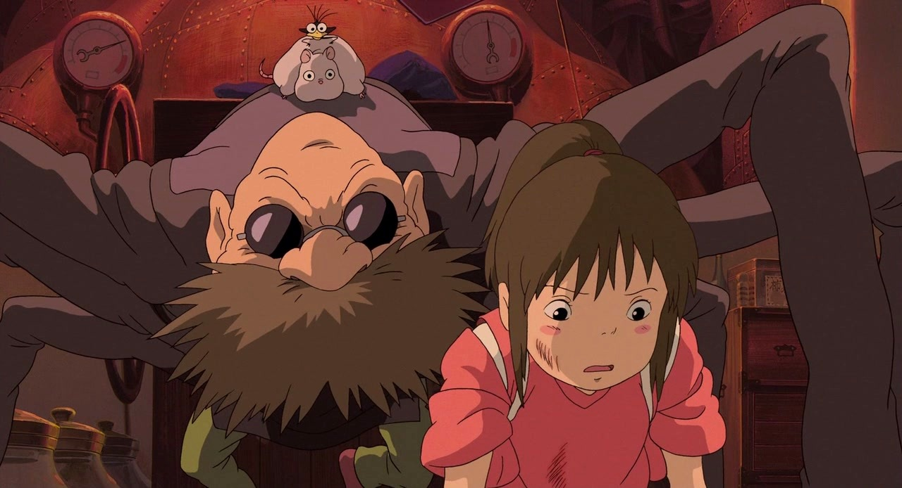

Персонажи
Второстепенные
Безликий
Безликий Бог Каонаси (яп. カオナシ (仮面男) Каонаси, «мужчина в маске», омонимично словосочетанию «без лица») — божество, которое не имеет своего лица, постоянно в поисках нового лица. По словам Миядзаки, ему хотелось «показать бога-бродягу, у которого нет дома и аналогов которого нет в японском фольклоре». Сначала выбор Безликого пал на Тихиро, но когда он предлагал ей помощь, она отказывалась. Потом ему попался жадный лягушонок, который хотел выковырять из щелей в полу остатки золотого песка, оставшегося после обслуживания Речного Божества (которое было настолько грязным, что вначале его приняли за Духа помоек). Каонаси проглотил его и стал таким, каким был лягушонок: ненасытным, жадным, и постепенно стал перевоплощаться в чудовище и поедать работников купален. Тихиро даёт ему горький пирожок, и он выплёвывает лягушонка и других работников купален и следует на поезде вместе с Тихиро к Дзэнибе. Она просит Безликого помочь ей с хозяйством, и он остаётся.
Дзэниба
Дзэниба (яп. 銭婆 Дзэниба) (сэйю: Мари Нацуки) — сестра-близнец Юбабы. Полная её противоположность. Живёт в скромном домике с огородом, рядом со станцией «Дно болота», но и в её доме хватает тайн и загадок. Она не одобряла жизни своей сестры, такой пышной и богатой, поэтому предпочла не связывать себя с этим. Но Юбаба не дала Дзэнибе забыть о их связи, она посылает Хаку украсть печать у Дзэнибы. Печать защищена смертельным проклятием, укравший её Хаку должен умереть. Когда Тихиро решает вернуть печать и спасти Хаку, Дзэниба не сожалеет, что жестоко поступила с Хаку (потому, что «он — вор»), но всё же прощает его, показывая, что от любого дурного поступка можно очиститься. Она рада и тому, что Каонаси остался с ней, потому что самой с хозяйством, хоть и с небольшим, справляться трудно — ведь при этом она старается не использовать колдовства. На прощание Дзэниба подарила Тихиро резиночку для волос, которую все, кто были у Дзэнибы, сплели вместе. Дзэниба заботлива и скромна по своей природе, не требует ничего большего от жизни, но, как можно убедиться, способна дать жёсткий отпор.
Дедушка Камадзи
Дедушка Камадзи (яп. 釜爺 Камадзий, «дед-котелок») (сэйю: Бунта Сугавара) — шестирукий истопник в банях Юбабы, руководящий командой Сусуватари. Почти всё время проводит в работе — даже ест и спит, не покидая рабочего места. Он является проводником для Тихиро в новом для неё мире, потому что первым указывает ей на правила, которые здесь царят, — он делает это не только при помощи слов, но и самим своим видом. Обладающий на первый взгляд устрашающей внешностью — множеством рук, которые способны, казалось бы, до бесконечности растягиваться (в соответствии со спецификой занятия), усами Фридриха Ницше и глазами, скрытыми за тёмными стёклами очков, — он на самом деле преисполнен добродушия и готовности помочь. В душе он добряк и романтик. В первую же минуту знакомства с Тихиро он обманывает одну из работниц (Рин) и говорит, что это его внучка, и даже отдаёт припасённое лакомство, чтобы Тихиро устроили на работу. Он также разглядел любовь между Хаку и Тихиро, всячески пытается помочь им. Камадзи, которого другие работники ласково называют «дедушка», — действительно «хранитель очага» купален Абура-я, представляющий суть всего коллектива как организма, на деле, как это частенько бывает, сознательно оторвавшего себя от своей начальницы и даже в некоторой мере морально противостоящего ей.
Рин
Рин (яп. リン Рин) (сэйю: Тамай Юми (англ.)рус.) — девушка, служащая в банях Юбабы. Является наставницей Тихиро, которая стала работать у Юбабы. При первой встрече с Тихиро Рин постоянно торопила её, презирала и указывала на все недостатки. Но как только Рин узнала, что Тихиро получила работу, она была искренне за неё рада и обещала свою помощь во всём, сразу становясь в глазах Тихиро новым другом. Ворчливый, но добродушный человек, не лишённый очарования. Её мечта — накопить денег, чтобы уехать.
Речное Божество

Речное Божество (яп. 川の神 кава но ками, речное божество) (сэйю: Коба Хаяси (яп.)рус.), «Дух помоек», как назвала этого духа Юбаба, потому что в том, что пришло в бани, нельзя было разглядеть Речное Божество. По словам Миядзаки, «этот бог является небольшой аллегорией загрязнённых рек». Этот Дух помог Тихиро, отблагодарив её за работу, дав нигаданго (исцеляющий «горький пирожок», а не золото), который в дальнейшем поможет ей в некоторых безвыходных ситуациях.
Бо
Бо (яп. 坊 Бо:) (сэйю: Рёносукэ Камики (англ.)рус.) — сын Юбабы. Ужасно избалованный и капризный малыш, который в несколько раз больше её самой. Он никогда не покидал своей комнаты из-за страха матери перед всевозможными инфекциями. Юбаба нечасто его посещала, только когда он сильно начинал бушевать и она бежала его успокаивать, ублажая его душу новыми игрушками или сладостями. Но при встрече Дзэниба превращает Бо в толстую крысу, о чём свидетельствует его хвост, и он отправляется с Тихиро к Дзэнибе. После возвращения Бо уже не кажется таким капризным, как раньше. Также после этого путешествия он сам встал на две ноги.
Акио Огино (отец)
Акио Огино (яп. 荻野 明夫 Огино Акио) (сэйю: Такаси Наито (яп.)рус.) — отец Тихиро. Высокий, полноватый мужчина, изображён как человек довольно самоуверенный. Показана его беспардонность в отношении еды и уверенность в том, что практически за всё можно заплатить деньгами.
Юко Огино (мать)
Юко Огино (яп. 荻野 悠子 Огино Ю:ко) (сэйю: Ясуко Савагути (англ.)рус.) — мать Тихиро. Женщина невысокого роста и хрупкого телосложения. Иногда критикует мужа, но в целом полагается на него и следует за ним.
Производство
Основа сюжета
Этот фильм рассказывает о 10-летней девочке, родители которой превратились в свиней. У Хаяо Миядзаки есть пять юных знакомых примерно такого же возраста, как госпожа Хиираги. Миядзаки хотел создать фильм, который бы им понравился — для этого и взялся за «Унесённых призраками». Поэтому Миядзаки также использовал образ своего детства — бани. Мультфильм «Наш сосед Тоторо» предназначался для малышей, «Небесный замок Лапута» — для мальчиков семи-одиннадцати лет, «Ведьмина служба доставки» рассказывала, как девочка постарше ведёт самостоятельную жизнь. Но не было сделано ни одного фильма для десятилетних девочек, которые только-только вступают в пору своей юности. Поэтому Миядзаки читал журналы с комиксами для девочек, оставленные его юными друзьями на даче. Он задумался, нельзя ли снять фильм, в котором главными героинями стали бы именно такие девочки. Если фильм заставит их сопереживать, для Миядзаки это было бы успехом.

На этот раз Миядзаки создаёт героиню, которая является самой обычной девочкой, такую, которая была бы симпатична аудитории, о которой зрители могли бы сказать: «Так и есть». Было очень важно сделать её простой и без всяких преувеличений. Это не история, в которой герои взрослеют, а история, где под влиянием особых обстоятельств раскрывается что-то, что уже в них есть.
Кроме того, Миядзаки признаётся в интервью, что фильм и общая схема взаимоотношений героев может рассматриваться как система отношений работников самой анимационной студии «Гибли», где Юбаба — президент студии, Камадзи — сам Хаяо Миядзаки, а Тихиро оказывается в роли только что принятого на работу молодого специалиста, который должен доказать свою полезность, чтобы не быть уволенным.
Замыслы
Существует детская книга «Таинственный город за туманами». Она была издана в 1980 году, и Миядзаки подумывал о том, чтобы её экранизировать. Это было ещё до того, как началась работа над «Принцессой Мононоке». Одна из сотрудниц студии полюбила эту книгу ещё в пятом классе, много раз перечитывала. Миядзаки всё не мог понять, чем же эта книга так интересна. В отчаянии он пишет заявку на фильм по этой книге, но её не принимают. Затем был современный сюжет с героиней несколько старше, но его также отвергли. В конце концов получилась сказка со старой ведьмой, хозяйкой бани. Если вспомнить две предыдущих заявки, бани там тоже были.
Этот мир больше похож на музей под открытым небом Эдо-Токио, чем на современность. У Миядзаки всегда вызывали интерес здания, выстроенные в псевдозападном стиле. Кажется, что люди забыли жизнь, здания, улицы, по которым гуляли не так давно. Тогда люди не были такими слабыми… Все думают, что проблемы, с которыми люди сталкиваются сегодня, — совершенно новы и неизведанны. Но Миядзаки считает, что люди просто к ним не привыкли, не готовы к ним. Поэтому этим фильмом Миядзаки хочет вернуть людей, смотрящих аниме, в то время, которое, по его словам, люди забыли.